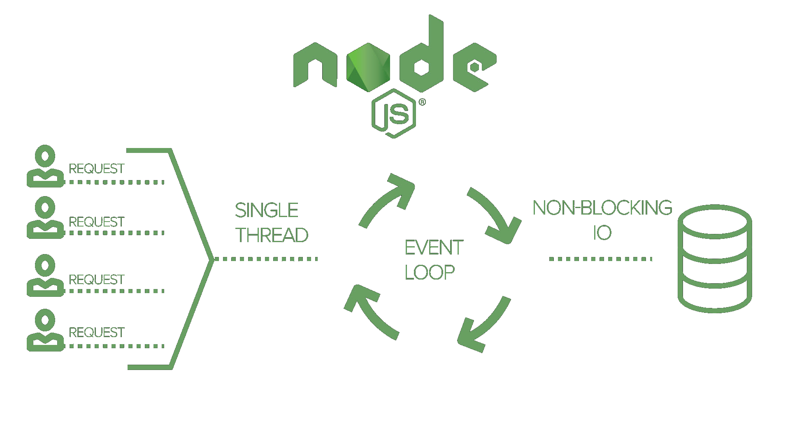

Node.js
“Node.js is a JavaScript runtime built on Chrome's V8 JavaScript engine”
nodejs.org
First of all
Node is JavaScript for servers
Why
So, why even bother when there is Java, C#, Python, Ruby e.t.c frameworks?
Event loop

nodejs.org - Blocking vs. Non-Blocking
Hello World NodeJS http server
const http = require('http');
const hostname = '127.0.0.1';
const port = 3000;
const server = http.createServer((req, res) => {
res.statusCode = 200;
res.setHeader('Content-Type', 'text/plain');
res.end('Hello World\n');
});
server.listen(port, hostname, () => {
console.log(`Server running at http://${hostname}:${port}/`);
});
What is Node besides web server?
NodeJS in a nutshell
- Open source & cross-platform project
- Build on Chrome's JavaScript runtime environment
- Event driven & Non-blocking IO
- Single threaded
- Build in Async IO, HTTP/s, file-system etc
- Ability to do JavaScript on server
- Modules